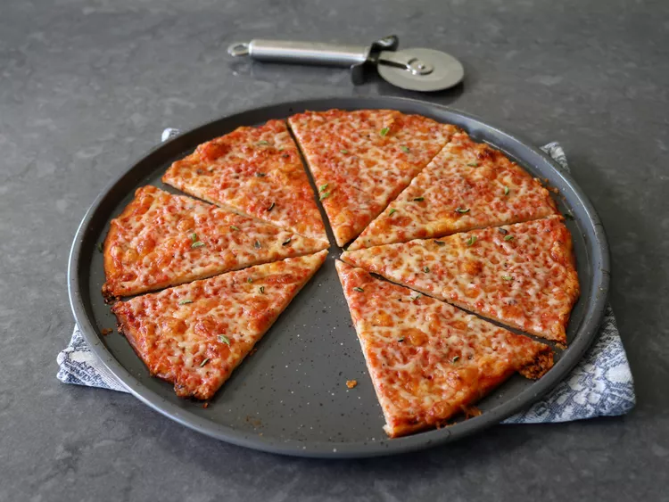

Pizza

A simple thin style pizza that is easy to make. The author of this recipe found that this south shore bar recipe
is probable the most novice friendly pizza that, while it takes a while to rise, is simple because you just press it flat.
No spinning or rolling necessary.
Ingredients:
Pizza Dough:
- 2 1/4 teaspoons dry active yeast (1 packet)
- 1 1/2 teaspoons white sugar
- 1 cup warm water, at about 105 degrees F (41 degrees C)
- 3 2/3 cups all-purpose flour or bread flour
- 1 1/2 teaspoons kosher salt
- 2 tablespoons melted unsalted butter
- 2 tablespoons corn oil or other vegetable oil
Sauce:
- 1 1/2 cups San Marzano tomato puree (from 1 can San Marzano tomatoes), or plain tomato sauce
- 1 teaspoon kosher salt
- 1/2 teaspoon dried oregano, or to taste
- 1 pinch cayenne pepper
Pizzas:
- 1/2 cup corn oil, divided, to grease pizza pans
- 8 ounces grated sharp white Cheddar cheese
- 8 ounces grated Monterey Jack cheese